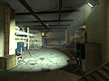

Friday, February 11 2005
In advance of the Counter-Strike: Source update we've mentioned here recently, we'll be releasing an update for Half-Life 2: Deathmatch. This update will include two new weapons (the StunStick and the Slam) as well as a return of the trusty crowbar. We've decided to also include a new map called "Steam Lab."
Here are a few images:



Right around the same time, we'll be releasing the source code to Half-Life 2: Deathmatch in the SDK.
This release will happen some time next week. Right now, we're shooting for Thursday the 17th.
And just a quick note for those of you who have been asking -- yes, VAC 2 is coming.